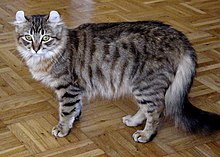
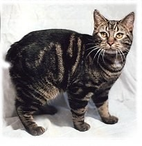

|
Abyssinian |
The Abyssinia is a breed of domestic short-haired cat with a distinctive "ticked" tabby coat, in which individual hairs are banded with different colors.[2] The breed is named for Abyssinia (now called Ethiopia), where it is believed to have originated.[3] |
|
Aegean |
Aegean cats are a naturally occurring landrace of domestic cat originating from the Cycladic Islands of Greece. It is considered a natural cat, developing without human interference.[1] Development of the Aegean cat as a formal breed began in the early 1990s by breeders in the fledgling Greek cat fancy, but the variety has yet to be recognized by any major fancier and breeder organization. It is considered to be the only native Greek variety of cat. |
|  |
American Curl |
The American Curl is a breed of cat characterized by its unusual ears, which curl back from the face toward the center of the back of the skull. An American Curl's ears should be handled carefully because rough handling may damage the cartilage in the ear. The breed originated in Lakewood, California, as the result of a spontaneous mutation. |
 |
American Bobtail |
The American Bobtail is an uncommon breed of domestic cat which was developed in the late 1960s.[1] It is most notable for its stubby "bobbed" tail about one-third to one-half the length of a normal cat's tail. This is the result of a cat body type genetic mutation affecting the tail development, similar to that of a Manx cat |
 |
American Shorthair
|
The American Shorthair (ASH) is a breed of domestic cat believed to be descended from European cats brought to North America by early settlers to protect valuable cargo from mice and rats.[1] According to the Cat Fancier's Association, in 2012, it was the seventh most popular pedigreed cat in the United States. |
 |
American Wirehair |
The American Wirehair is a breed of domestic cat originating in upstate New York. As of 2003, though the breed is well-known, it is ranked as the most rare of the 41 Cat Fanciers' Association breeds, with only 22 registered, down from 39 in 2002. |
 |
Asian |
The Asian, also known as the Malayan, is a cat breed similar to the Burmese but in a range of different coat colours and patterns.[1] Long-haired Asians of all varieties are called Tiffanies. Asians are grouped in the foreign section at cat shows. |
 |
Bombay cat
|
The Bombay cat is a type of short-haired cat developed by breeding sable Burmese and black American Shorthair cats, to produce a cat of mostly Burmese type, but with a sleek, panther-like black coat. Bombay is the name given to black cats of the Asian group.[1] Bombay cat is also called the Black Burmese, and nicknamed "mini-panther". |
 |
Burmilla
|
The Burmilla is a breed of domestic cat which originated in the United Kingdom in 1981. It is a cross between the Chinchilla Persian and Burmese breeds. Standards were produced in 1984, and the breed gained championship status in the United Kingdom in the 1990s |
|  |
Manx cat
|
The Manx cat is a breed of domestic cat (Felis catus) originating on the Isle of Man, with a naturally occurring mutation that shortens the tail. Many Manx have a small stub of a tail, but Manx cats are best known as being entirely tailless; this is the most distinguishing characteristic of the breed, along with elongated hind legs and a rounded head. |